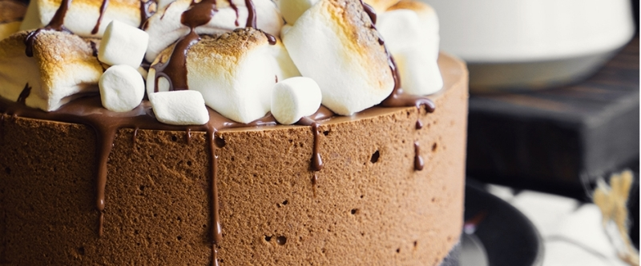

приготовление:
-
Для основы взять 150 гр. шоколадного печенья (лучше орео) и измельчить в блендере. Растопить 35 гр. сливочного масла, если печенье орео и 50 гр., если обычное, влить в крошку, перемешать. В форму 20 см в диаметре постелить пленку, высыпать крошку, разровнять, убрать в холодильник.
-
200 гр. маршмеллоу переложить в чашу, прогревать в микроволновой печи короткими импульсами (примерно по 15-20 секунд), дождаться лёгкого намёка на то, что маршмеллоу начало топиться. Если нет микроволновки - использовать водяную баню. Влить 95 гр. 33% сливок, снова немного прогреть массу, осторожно перемешивая её. Масса ещё не однородная, но пора добавить 120 гр. горького шоколада, аккуратно перемешивать до однородного состояния. Не перегревать массу. Дать массе слегка остыть, градусов до 40. Взбить 300 гр. 33% сливок до мягких пиков в глубокой чаше. В несколько этапов осторожно ввести шоколадную массу к сливкам.
-
Достать форму из холодильника, вылить сверху получившийся мусс. Убрать заготовку в холодильник до застывания массы, на это уйдет около двух часов.
-
Перед подачей приготовить ганаш (60 гр. 33% сливок, 60 гр. шоколада). Дать слегка остыть, вылить 2/3 ганаша на поверхность десерта и распределить лопаткой, сверху положить декор из маршмеллоу, остальную треть полить сверху.